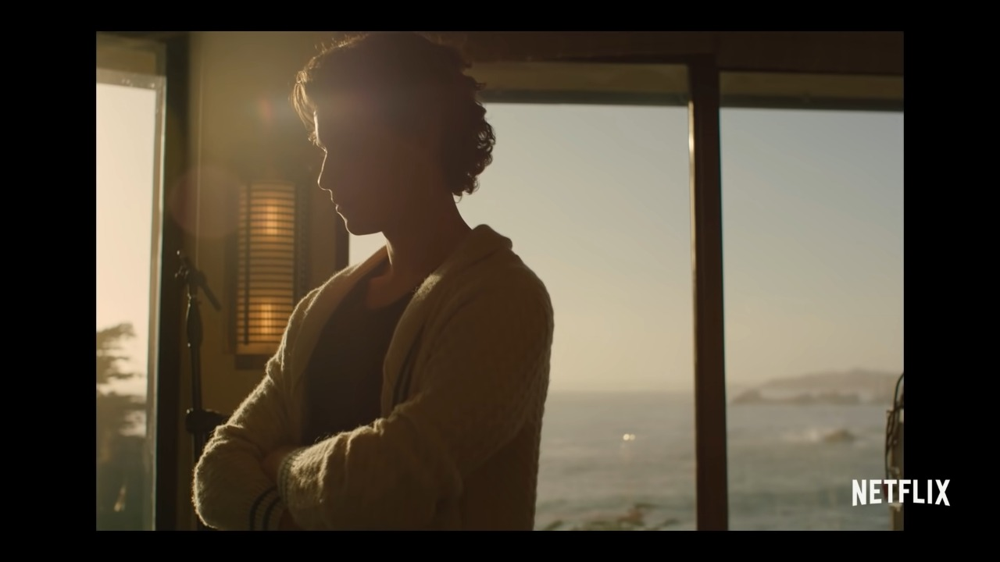

Shawn Mendes In Netlix Documentary 'In Wonder' 2020
By: Melati Alya Puti Irawan | June 6, 2022 Shawn Mendes' rise to fame as a pop star — from making Vines in his bedroom to selling out stadiums — has been exponential. Directed by Grant Singer, Netflix's latest original documentary “Shawn Mendes: In Wonder” captures the last few years of Mendes' life in under an hour and a half, focusing primarily on his 106-show self-titled tour and the production of his upcoming album Wonder. While it effectively captures the intensity of fame from Mendes' perspective, the film itself often feels more underwhelming than comprehensive.
“In Wonder” loosely follows a chronological order to portray Mendes' evolution as an artist. It starts with heartwarming home footage of Mendes singing as a middle schooler and soon transforms into sold-out stadium performances, capturing his career's rapid escalation. Yet even under the growing pressure of fame, as the documentary shows, Mendes holds his ground.
The film neatly paints Mendes as the modest, down-to-earth person that his fans already see him as — he remains humble, driven by gratitude and his passion for music. The documentary reinforces this image to its limits, struggling to introduce anything relatively new about Mendes' life or character. In spite of its title, “In Wonder” is so predictable that it's disappointing.
Mendes' narration weaves in and out of the film somewhat incoherently, offering brief moments of respite or reflection that never fully develop. His momentary discussions of insecurity, pressure and disappointment are interspersed among excessive concert montages and exclusive scenes from the production of Wonder. Scenes that are intended as transitions instead feel out of place, misguiding the film rather than moving it along. This disconnect is especially evident when the documentary pivots to Mendes' relationship with former Fifth Harmony member Camila Cabello. Though Cabello is the heart of Mendes' songwriting inspiration, dedicating significant screen time to their whirlwind romance feels unnecessary.
After a series of long scenes detailing the couple's complicated history, the film thankfully takes a more positive turn as it shifts focus to Mendes' break from touring — his first trip home to Canada in over three months. Mendes picks his sister up from school and hugs his parents at home, hosting an intimate tour of his hometown. For the first time, the documentary moves past concert montages and gives viewers a genuine look into Mendes' past. While viewers get to see his hometown and family, they also see what he had to leave behind to pursue his dream.
The documentary is undoubtedly enjoyable for any Mendes fan with its appealing aesthetics and behind-the-scenes footage, but at the end of the day, it feels more like a promotion for his album than an in-depth look at the superstar's life. More frustrating than fruitful, the only thing that “In Wonder” leaves its audiences wondering is why a film with so little to say was produced in the first place.
Here's the trailer of Netflix' Documentary Shawn Mendes: In Wonder